\[ \newcommand{dn}[3]{\frac{\mathrm{d}^{#3} #1}{\mathrm{d} #2^{#3}}}
\newcommand{\d}[2]{\frac{\mathrm{d} #1}{\mathrm{d} #2}}
\newcommand{\dd}[2]{\frac{\mathrm{d}^2 #1}{\mathrm{d} {#2}^2}}
\newcommand{\ddd}[2]{\frac{\mathrm{d}^3 #1}{\mathrm{d} {#2}^3}}
\newcommand{\pdn}[3]{\frac{\partial^{#3} #1}{\partial {#2}^{#3}}}
\newcommand{\pd}[2]{\frac{\partial #1}{\partial #2}}
\newcommand{\pdd}[2]{\frac{\partial^2 #1}{\partial {#2}^2}}
\newcommand{\pddd}[2]{\frac{\partial^3 #1}{\partial {#2}^3}}
\newcommand{\p}{\partial}
\newcommand{\D}[2]{\frac{\mathrm{D} #1}{\mathrm{D} #2}}
\newcommand{\Re}{\mathrm{Re}}
\newcommand{\Im}{\mathrm{Im}}
\newcommand{\bra}[1]{\left\langle #1 \right|}
\newcommand{\ket}[1]{\left|#1 \right\rangle}
\newcommand{\braket}[2]{\left\langle #1 \middle|#2 \right\rangle}
\newcommand{\inner}[2]{\left\langle #1 ,#2 \right\rangle}
\newcommand{\l}{\left} \newcommand{\m}{\middle} \newcommand{\r}{\right}
\newcommand{\f}[2]{\frac{#1}{#2}} \newcommand{\eps}{\varepsilon}
\newcommand{\ra}{\rightarrow} \newcommand{\F}{\mathcal{F}}
\newcommand{\L}{\mathcal{L}} \newcommand{\t}{\quad}
\newcommand{\intinf}{\int_{-\infty}^{+\infty}}
\newcommand{\R}{\mathcal{R}} \newcommand{\C}{\mathcal{C}}
\newcommand{\Z}{\mathcal{Z}} \newcommand{\bm}[1]{\boldsymbol{#1}} \]
MFT2022、お疲れ様でした。 リレーコンピュータを構想してから 5 年、なんとか完成することができました。 ということで、ようやくトランジスタ縛りから開放されたので、トランジスタで CPU を作って、OS を動かしていきます。 来年の MFT2023 に出せたらいいな…？
目標・野望
ロマンと実用性の両立！楽しい！感動できる！
1. ロジック IC で作る
できるだけスルーホールのロジック IC を使って作る。
2. 全部自作。
回路から、アセンブラ、コンパイラ、OS を全て手作り。
3. 実用性
いろいろ遊べる。機能がたくさん。
- 割り込み
- DMA
- VGA 映像出力
- キーボード入力
- GPIO、ADC、DAC、PWM
- I2C、SPI、Serial
4. 柔軟な開発
リレーコンピュータが5年もかかったのは、何回か大幅な設計変更をしたから。 だいぶ寄り道してたのもあるけど。 回路基板を実装した後に設計変更するのはかなり萎える。
今回のマイコン開発ではエミュレータとFPGAを使って†アジャイル開発†する。 たとえば、OSを作る中でCPUの仕様を変えたくなったらエミュレータを書き換える。 最終的に仕様が決まってからロジックICとして実装する。
作るもの
CPU
RISC-V っぽい CPU。
アセンブラ
アセンブリと機械語を一対一に変換するだではなく、変数・定数にラベルを割り当てて、生でアセンブリを書く負担を減らします。
コンパイラ
C言語っぽい高級言語を自作して、そのコンパイラを作ります。
エミュレータ
機械語コードを読んで CPU をエミュレートします。
OS
リアルタイム OS を作ります。
ハードウェア
ロジック IC で CPU を組みます。
ライタ
パソコンから ROM に機械語コードを書き込みます。
将来的に作りたいもの
LLVM バックエンド
LLVM 神「力が…欲しいか…」
LLVM の力を借りて、C 言語が完全にサポートされたコンパイラを作ります。
デバッガ
パソコン側から、ステップ実行したり、ROM の値を読んだりできるようにします。
開発環境
VSCode の拡張機能として、フォーマッタ、シンタックスハイライトを実装します。 VSCode のデバッガインターフェースを使って実行＆デバッグできるようにします。
開発フロー
